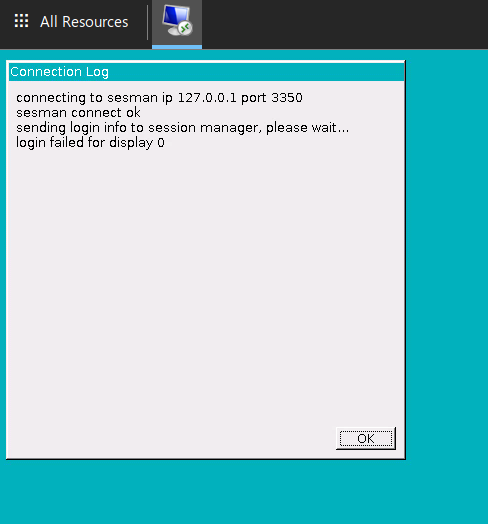

Managing Data Safe Haven users#
Important
This document assumes that you already have access to a Safe Haven Management (SHM) environment and one or more Secure Research Environments (SREs) that are linked to it.
üî∞ Create new users#
Users should be created on the main domain controller (DC1) in the SHM and synchronised to Azure Active Directory.
A helper script for doing this is already uploaded to the domain controller - you will need to prepare a CSV file in the appropriate format for it.
üîí SRE Security Groups#
Each user should be assigned to one or more Active Directory “security groups”, which give them access to a given SRE with appropriate privileges. The security groups are named like so:
SG <SRE ID> Research Users: Default for most researchers. No special permissions.SG <SRE ID> Data Administrators: Researchers who can create/modify/delete database tables schemas. Given to a smaller number of researchers. Restricting this access to most users prevents them creating/deleting arbitrary schemas, which is important because some SREs have their input data in database form.SG <SRE ID> System Administrators- Researchers with elevated privileges through sudo. Rarely used but could be useful inTier 0/1SREs to let groups manage their own packages.
üìú Generate user details CSV file#
üöó Using data classification app#
Follow the instructions in the classification app documentation to create users
Users can be created in bulk by selecting
Create User > Import user listand uploading a spreadsheet of user detailsUsers can also be created individually by selecting
Create User > Create Single User
After creating users, export the
UserCreate.csvfileTo export all users, select
Users > Export UserCreate.csvTo export only users for a particular project, select
Projects > (Project Name) > Export UserCreate.csv
Upload the user details CSV file to a sensible location on the SHM domain controller
Note
We suggest using
C:\Installation\YYYYDDMM-HHMM_user_details.csvbut this is up to you
✋ Manually edit CSV#
On the SHM domain controller (DC1).
Make a new copy of the user details template file from
C:\Installation\user_details_template.csvTip
We suggest naming this
YYYYDDMM-HHMM_user_details.csvbut this is up to youRemove the example user and add the required details for each user
SamAccountName: Log in username without the@<SRE domain>part.Tip
We recommend using
firstname.lastnameformat.Warning
Ensure that
SamAccountNamehas a maximum of 20 characters from the 7-bit ASCII set (unaccented letters, numbers and some punctuation) or synchronisation will fail.GivenName: User’s first / given nameWarning
Ensure that
GivenNameuses only characters from the 7-bit ASCII set (unaccented letters, numbers and some punctuation) or synchronisation will fail.Surname: User’s last name / surnameWarning
Ensure that
Surnameuses only characters from the 7-bit ASCII set (unaccented letters, numbers and some punctuation) or synchronisation will fail.Mobile: Phone number to use for initial password reset.Important
This must include country code in the format
+<country-code> <local number>(e.g.+44 7123456789).Include a space between the country code and local number parts but no other spaces.
Remove the leading
0from local number if present.This can be a landline or or mobile but must be accessible to the user when resetting their password and setting up MFA.
Users can add the authenticator app and/or additional phone numbers during MFA self-registration.
SecondaryEmail: An existing organisational email address for the user.Note
This is not uploaded to their Data Safe Haven user account but is needed when sending account activation messages.
GroupName: The name of the üîí SRE Security Groups that the users should be added to. Users will need to be added to the relevant security group before they can access an SRE. You can also change this manually later on (see üë© üë® Modifying user SRE access).Tip
If the user needs to be added to multiple groups, separate them with a pipe-character (
|).
üîÑ Create and synchronise users#
Upload the user details CSV file to a sensible location on the SHM domain controller (recommended: C:\Installation).
This can be done by copying and pasting the file from your deployment device to the SHM DC.
Log into the SHM primary domain controller (
DC1-SHM-<SHM ID>) VM using the login credentials stored in Azure Key VaultOpen a
Powershellcommand window with elevated privilegesRun
C:\Installation\CreateUsers.ps1 <path_to_user_details_file>This script will add the users and trigger synchronisation with Azure Active Directory
It will still take around 5 minutes for the changes to propagate
Error
If you get the message New-ADUser : The specified account already exists you should first check to see whether that user actually does already exist!
Once you’re certain that you’re adding a new user, make sure that the following fields are unique across all users in the Active Directory.
SamAccountNameSpecified explicitly in the
CSVfile.If this is already in use, consider something like
firstname.middle.initials.lastname
DistinguishedNameFormed of
CN=<DisplayName>,<OUPath>byActive Directoryon user creation.If this is in use, consider changing
DisplayNamefrom<GivenName> <Surname>to<GivenName> <middle initials> <Surname>.
Danger
These domain administrator credentials have complete control over creating and deleting users as well as assigning them to groups
Do not use them except where specified and never write them down!
Be particularly careful never to use them to log in to any user-accessible VMs (such as the SRDs)
üë© üë® Modifying user SRE access#
Users may have been added to one or more üîí SRE Security Groups through setting the GroupName field in the user_details_template.csv (see üìú Generate user details CSV file). Security Group assignments can also be manually modified via the following:
Log into the SHM primary domain controller (
DC1-SHM-<SHM ID>) VM using the login credentials stored in Azure Key VaultIn Server Manager click
Tools > Active Directory Users and ComputersClick on
Safe Haven Security GroupsFind the group that the user needs to be added to (see üîí SRE Security Groups)
Right click on the group and click
PropertiesClick the
MemberstabTo add a user click
Add...Enter a part of the user’s name and click
Check NamesSelect the correct user and click
OK, then clickOKagain until the window closes
To remove a user click on the username of the person and then
RemoveClick
Yesif you’re sure this user should no longer have access to this SRE, then clickOKagain until the window closes
Open a
Powershellcommand window with elevated privilegesRun
C:\Installation\Run_ADSync.ps1
üì± Edit user details#
The DC1 is the source of truth for user details. If these details need to be changed, they should be changed in the DC1 and then synchronised to Azure AD.
Log into the SHM primary domain controller (
DC1-SHM-<SHM ID>) VM using the login credentials stored in Azure Key VaultIn Server Manager click
Tools > Active Directory Users and ComputersClick on
Safe Haven Research UsersFind the person, right click on them and select
PropertiesTo edit a phone number, select the
Telephonestab and edit theMobilenumberClick
OKto save the new numberOpen a
Powershellcommand window with elevated privilegesRun
C:\Installation\Run_ADSync.ps1
To edit a user’s email or their username (or first name or last name) you’ll need to delete the user entirely and recreate them, meaning they’ll have to set up their accounts (including MFA) again
Find the person, right click on them and click
DeleteClick
OKOpen a
Powershellcommand window with elevated privilegesRun
C:\Installation\Run_ADSync.ps1Create a new csv (or edit an existing) one with the correct user details (see üî∞ Create new users)
Run
C:\Installation\CreateUsers.ps1 <path_to_user_details_file>Run
C:\Installation\Run_ADSync.ps1
You can check the changes you made were successful by logging into the Azure Portal as the AAD admin
Open
Azure Active DirectoryClick on
UsersunderManageand search for the userClick on the user and then
Edit propertiesand confirm your changes propagated to Azure AD
❌ Deleting users#
Log into the SHM primary domain controller (
DC1-SHM-<SHM ID>) VM using the login credentials stored in Azure Key VaultIn Server Manager click
Tools > Active Directory Users and ComputersClick on
Safe Haven Research UsersFind the person, right click on them and click
DeleteOpen a
Powershellcommand window with elevated privilegesRun
C:\Installation\Run_ADSync.ps1You can check the user is deleted by logging into the Azure Portal as the AAD admin
Open
Azure Active DirectoryClick on
UsersunderManageand search for the userConfirm the user is no longer present
üì≤ Assign MFA licences#
✋ Manually add licence to each user#
Login into the Azure Portal and connect to the correct AAD
Open
Azure Active DirectorySelect
Manage > Licenses > All ProductsClick
Azure Active Directory Premium P1Click
AssignClick
Users and groupsSelect the users you have recently created and click
SelectClick
Assignto complete the process
üöó Automatically assign licences to users#
To automatically assign licences to all local Active Directory users that do not currently have a licence in Azure Active Directory.
Ensure you have the same version of the Data Safe Haven repository as was used by your deployment team
Open a
Powershellterminal and navigate to thedeployment/administrationdirectory within the Data Safe Haven repositoryRun the
./SHM_Add_AAD_Licences.ps1 -tenantId <Tenant ID>script, where<Tenant ID>is the ID of the Azure tenant belonging to the SHM you want to add the licences to
üèÉ User activation#
We recommend using email to send connection details to new users.
Note
This is not a security risk since:
we are not sending passwords in this email
the user needs access to their previously-provided phone number in order to set their account password and MFA
A sample email might look like the following
Dear <participant name>,
Welcome to <event name>! You’ve been given access to a Data Safe Haven managed by <organisation name>. Please find a PDF version of our user guide attached. You should start by following the instructions about setting up your account and enabling multi-factor authentication (MFA).
Your username is: <username@domain> Your Safe Haven is hosted at: <URL>
The Safe Haven is only accessible from certain networks and may also involve physical location restrictions.
–details about network and location/VPN restrictions here–
üë∑ Common user problems#
One of the most common user issues is that they are unable to log in to the environment. Here we go through the login procedure and discuss possible problems at each step
üåò Expired webclient certificate#
If the certificate for the SRE domain has expired, users will not be able to login.

Tip
Solution: Replace the SSL certificate with a new one
Ensure you have the same version of the Data Safe Haven repository as was used by your deployment team
Open a
Powershellterminal and navigate to thedeployment/secure_research_environment/setupdirectory within the Data Safe Haven repositoryEnsure you are logged into the
AzurewithinPowershellusing the command:Connect-AzAccountRun
./Update_SRE_RDS_Ssl_Certificate.ps1 -sreId <SRE ID>, where the SRE ID is the one specified in the config
üî¥ Unable to log into remote desktop gateway#
If users give the wrong username or password they will not be able to progress past the login screen.

Tip
Solution: Check user credentials, password may need to be reset.
üöã Unable to open any remote apps#
Users are stuck at the Opening remote port message and never receive the MFA prompt.

Tip
Solution: Check MFA setup
Ensure that the user has been assigned a license in Azure Active Directory
Check that the user has set up MFA (at https://aka.ms/mfasetup ) and is using the phone-call or app authentication method
⁉️ xrdp login failure on the SRD#
If users can get to the login screen:

but then see this error message:
there are a couple of possible causes.
Error
Problem: the username or password was incorrectly entered
Solution: check username and password
Confirm that the username and password have been correctly typed
Confirm that there are no unsupported special characters in the password
Reset the account if there is no other solution
Error
Problem: the computer is unable to communicate with the login server
Solution: run diagnostics
This can happen for a variety of reasons (DNS problems, broken services on the SRD etc.)
Run the script under
deployment/administration/SRE_SRD_Remote_Diagnostics.ps1, providing the group and last IP octet of the problematic SRDThis will run a series of diagnostics intended to fix some common problems including
LDAP configuration
DNS configuration
SSS configuration
File mounting configuration
☁️ Unable to install from package mirrors#
If it is not possible to install packages from the package mirrors then this may be for one of the following reasons:
Error
Problem: Mirror VNet is not correctly peered
Solution: Re-run the network configuration script.
On your deployment machine.
Ensure you have the same version of the Data Safe Haven repository as was used by your deployment team
Open a
Powershellterminal and navigate to thedeployment/secure_research_environment/setupdirectory within the Data Safe Haven repositoryEnsure you are logged into
AzurewithinPowershellusing the command:Connect-AzAccountNB. If your account is a guest in additional Azure tenants, you may need to add the
-Tenant <Tenant ID>flag, where<Tenant ID>is the ID of the Azure tenant you want to deploy into.
Run the
./Apply_Network_Configuration.ps1 -sreId <SRE ID>script, where the SRE ID is the one specified in the config
Error
Problem: Internal mirror does not have the required package
Solution: Check package availability
To diagnose this, log into the Internal mirror using the Serial Console through the Azure portal.
Check the packages directory (i.e. /datadrive/mirrordaemon/pypi/web/packages for PyPI or /datadrive/mirrordaemon/www/cran for CRAN)

If the requested package should be available (i.e. it is on the appropriate allowlist), then you can force a mirror update by rebooting the EXTERNAL mirrors.
This will trigger the following actions:
Synchronisation of the external mirror with the remote, internet repository (a
pullupdate)Synchronisation of the internal mirror with the external mirror (a
pushupdate)
This may take an hour or two but should solve the missing package problem.